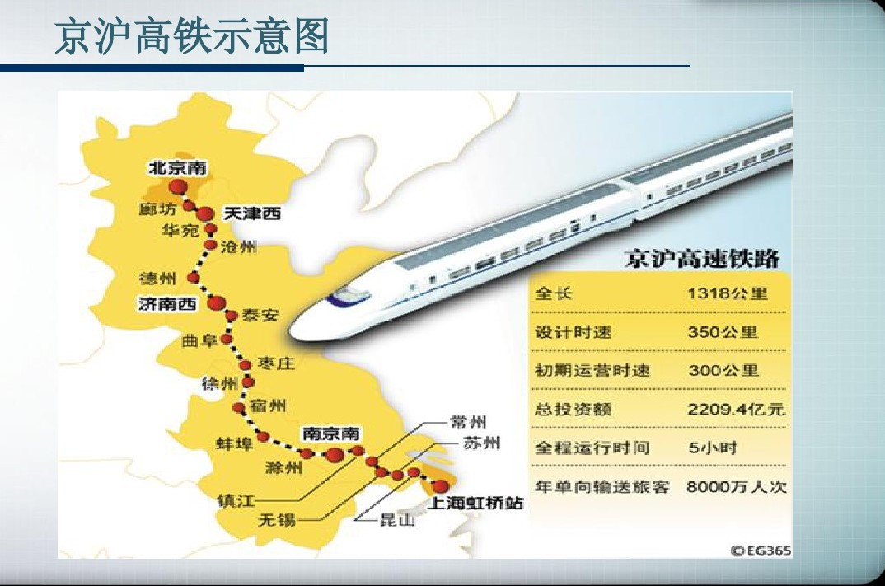
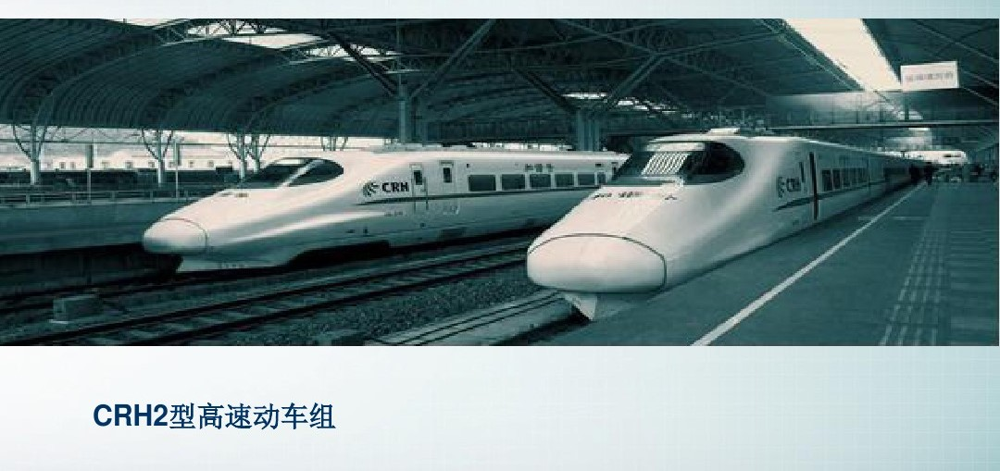
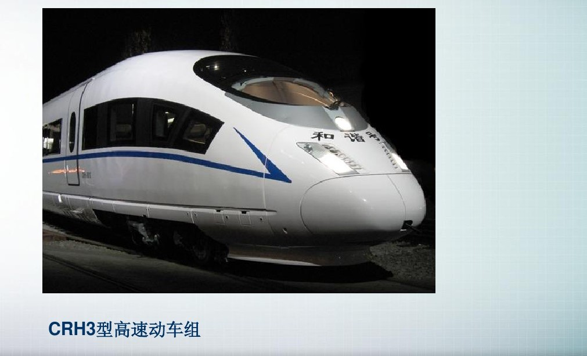
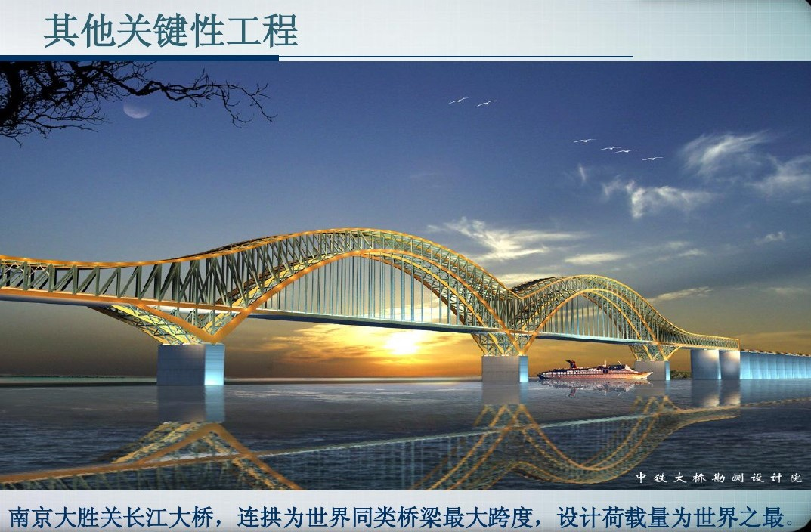

基本信息
京沪高速铁路（Beijing-Shanghai High-speed Railway），简称京沪高铁，又名京沪客运专线，是一条连接北京市与上海市的高速铁路，是2016年修订的《中长期铁路网规划 》中“八纵八横”高速铁路主通道之一。
京沪高速铁路途经中国的华北地区和华东地区，经北京、天津、上海三个直辖市以及河北、山东、安徽、江苏 四省，连接京津冀和长三角两个经济区域，沿线以平原为主，局部为低山丘陵区，经过海河、黄河、淮河、长江四大水系，所经 区域面积是中国社会经济发展活跃的地区之一，也是中国客货运输较繁忙、增长潜力较大的客运专线。
基本数据
京沪高速铁路于2008年4月18日正式开工；2011年6月30日，全线正式通车。全长1318千米，设24个车站，设计 的最高速度为380千米/小时。截至2017年9月，京沪高速铁路的运营速度350千米/小时。
京沪高铁开通初期每天将开行动车组90对，实行时速300公里和250公里两种速度等级混跑的开行模式，研制超过 150列时速350公里级别的CRH2C型和CRH3型高速动车组。
截至2016年1月，京沪高速铁路获中国发明专利51项、中国实用新型专利114项、中国外观设计专利5项、中国软 件著作权8项，中国国家级工法9项，专著18部，论文243篇。2016年1月8日，京沪高速铁路荣获2015年度中国国家科学技术进步特等奖。